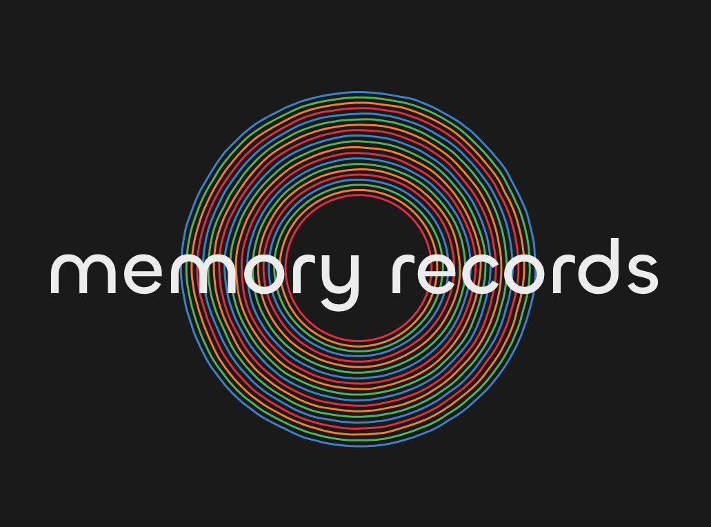
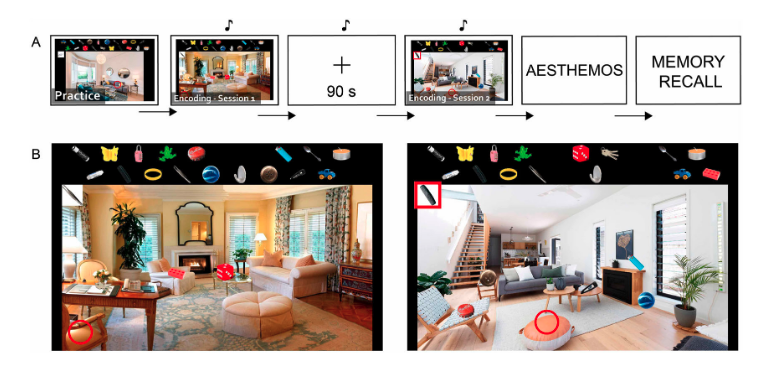
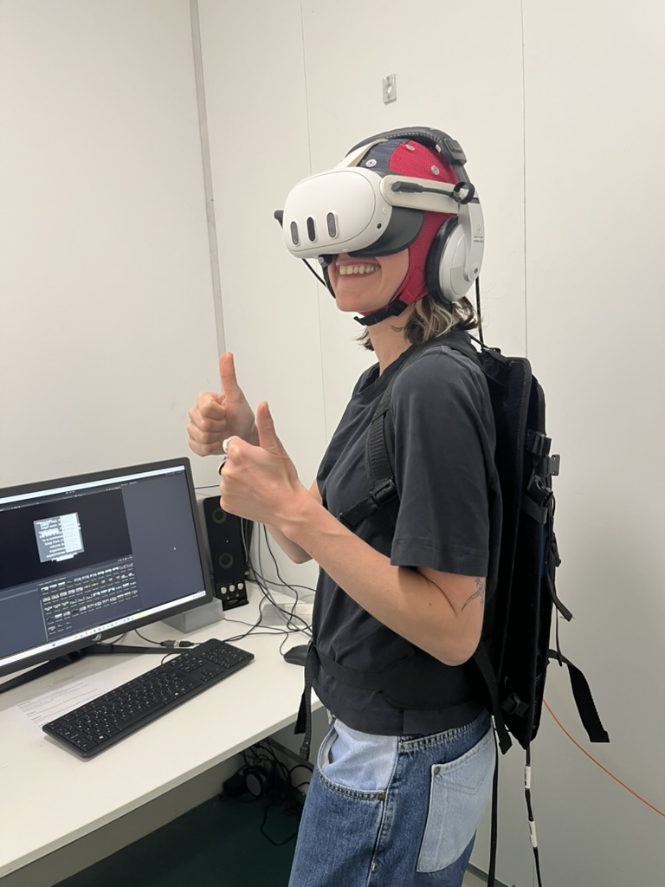
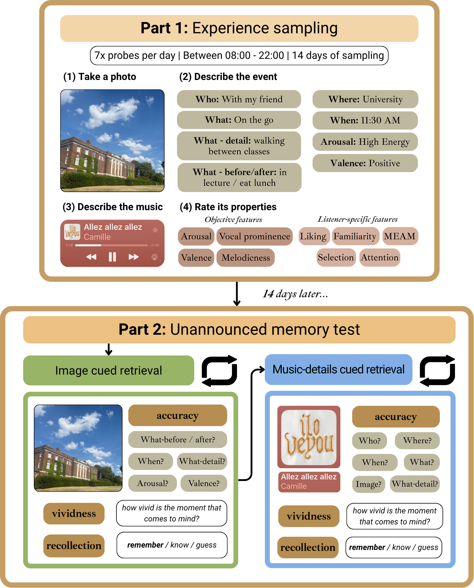

- Nawaz, S., & Omigie, D. (2025). Qualities of music-evoked autobiographical memories are associated with auditory features of the memory-evoking music. Plos one, 20(8), e0329072. https://doi.org/10.1371/journal.pone.0329072

Music-evoked autobiographical memories (or MEAMs, if you're in the know) are personal memories that are evoked by or closely associated with a piece of music. Think of a song that takes you back to an important event in your life, like a wedding or celebration, or a song that always reminds you of a time of your life or loved one - these are MEAMs.
My research explores how different characteristics of the music, the listener, and the music-listening context contribute to how and what kinds of memories are recalled. For example, by analysing the auditory features of memory-evoking music, I found that the energeticness/acousticness of the music is closely related to the kinds of memories recalled. More acoustic songs are associated with more vivid, important, emotionally complex memories, whereas more energetic songs are associated with memories that are recalled faster, and are more social and energetic.
Recently, I've been working on developing a website where anyone can share their own personal musical memories and view others', called Memory Records. Informed by citizen science and decolonial approaches to research, it will function as a living archive and open research tool. Alongside this, we are developing a pipeline that uses natural language processing to analyse written descriptions of MEAMs at scale.

Music-supported episodic memory is a term I use to describe the phenomenon of music influencing the way a memory for an event or experience is formed. What I am interested in better understanding is how the presence of music during an event, its objective features, and the listener's experience of the music all contribute to memory success.
In my MSc work, I developed an online paradigm in PsychoPyPython based experiment software based on the What-Where-When task, which assesses episodic memory by asking participants to encode and then recall what objects they moved, where they moved them to, and in what order (when). Participants dragged items on the screen to different 'hiding spots' in the presence of different kinds of emotional music.
We found that calming, positive music was the most beneficial for accurate memory, and that negative emotional responses impaired memory. In a follow-up study using the same paradigm, we found that, in the presence of better-liked music, memory for what was moved, was improved.

I also use virtual reality to explore music-supported memory, as it can simulate realistic, immersive experiences of music-listening. Using 360-degree videos from the Library for Universal Virtual Reality Experiments, we created a virtual reality 'holiday', where participants spent a day of sightseeing in different scenes while listening to different kinds of music.
At two time points after the VR experience, I tested their memory to determine how features of the music - how positive, energetic, familiar and well-liked it is, influence memory. We saw that the valencehow positive something is: lower valence = more negative, higher-valence = more positive of the music plays a key role in memory formation, dependent on how familiar the music is to the listener.
We also ran the study while collecting real-time brain data using EEGelectroencephalography, a neuroscience method that records the electrical activity of the brain, to examine brain states relevant during music-supported encoding. Manuscripts are in preparation so check back for updates!

To better understand how music influences memory, as it does in everyday life, we use a method called experience sampling, which samples the experiences of participants as they go about their daily lives. For this study, we sent texts to participants at random moments throughout the day and asked them to tell us information about whatever events may be happening, and the music they hear.
We were then able to test their memory for those recorded events two weeks later, and analyse how different aspects of the music (auditory features, emotional expression) and the listener (familiarity to the music, attention paid to it) support or interfere with memory.
We found several effects, for example that music with lyrics impairs memory formation and that the attention paid to the music during the initial event supports memory when the music is used as a memory cue. Manuscript in preparation so check back for more!